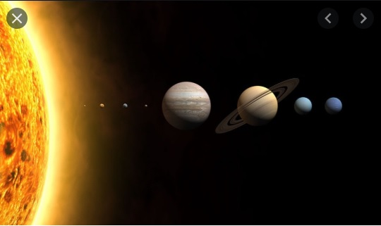

Ciências da Natureza
Química, Física, Biologia, Matemática e Astronomia são exemplos de Ciências Naturais. O substantivo ciência designa um modo organizado de trabalho que visa o estudo de algo, e o adjetivo natural é referente à natureza.
Assim, Ciências Naturais são aquelas ciências que têm por finalidade estudar objetos e fenômenos (acontecimentos) da natureza, quer esses fenômenos sejam observados em ambientes naturais, quer sejam produzidos ou reproduzidos em ambientes artificiais (isto é, ambientes criados pelo ser humano), como é o caso dos laboratórios. As Ciências Naturais têm um modo organizado de trabalho que permite a criteriosa observação dos fenômenos, a interpretação das observações e, em determinados momentos, a proposição de explicações para os fenômenos.
É difícil apresentar uma definição rápida e simples para a Química. De modo introdutório, podemos dizer que ela é a Ciência Natural que visa ao estudo das substâncias, da sua composição, da sua estrutura e das suas propriedades. Entre as propriedades das substâncias que mais interessam aos químicos está a tendência de elas tomarem parte, ou não, em transformações nas quais novas substâncias são formadas a partir de outras, denominadas reações químicas.
Assim como as outras Ciências, a Química teve uma evolução histórica até chegar ao seu estágio moderno e às suas atuais características. Ter noções de história da Química ajuda a compreender melhor como certos conceitos surgiram e por que seu surgimento foi importante. Este capítulo introdutório apresenta algumas características da Química, esboça brevemente sua evolução histórica e comenta, em linhas gerais, o método científico, que permite a descoberta de leis científicas e a proposição de teorias.

Química
Estudo científico da constituição da matéria, suas propriedades, transformações e as leis que as regem.
A produção de diversos materiais que tilizamos em nosso dia-a-dia, como, por exemplo, a borracha, o náilon e o metal, é resultado de conhecimentos de Química e de sua aplicação industrial.
Assim, podemos perceber que a Química estuda a matéria, as substâncias que a constituem e as suas transformações.
Aprender Química para o exercício da cidadania
Para a população em geral, uma expressão do tipo “pão sem química” comunica a ideia de um pão isento de substâncias prejudiciais à saúde. Na tentativa de transmitir tal mensagem, essa expressão é totalmente incorreta, uma vez que a produção do pão utiliza farinha de trigo como matéria-prima e parte dela sofre uma reação química, denominada fermentação. Desse modo, mesmo sem necessariamente saber Química, o padeiro executa, todos os dias, essa reação.
Assim, ao utilizar a expressão “pão sem química”, uma pessoa revela desconhecer algumas coisas:
- todos os objetos e materiais existentes na Terra (incluindo os pães) são constituídos por substâncias químicas;
- a Química não é um material, para que possa ser colocada em um pão. A Química é uma ciência, ou seja, um ramo do conhecimento humano que visa compreender melhor alguns acontecimentos que ocorrem na natureza e/ou em laboratório, estudando-os com uma linha organizada de trabalho, denominada método científico;
- ao fazer o pão, o padeiro utiliza processos químicos (reações químicas)
Portanto, o “pão sem química” é, na verdade, um pão obtido a partir de substâncias e reações químicas, mas sem a adição de substâncias que possam ser nocivas à saúde
Analogamente, frases como “não tomo remédios, pois contêm muita química”, ou “instalei em minha piscina um novo sistema de tratamento totalmente isento de química” também estão incorretamente elaboradas, pois confundem uma importante ciência com substâncias tóxicas ou com produtos e processos maléficos ao ser humano.
Em nosso dia a dia, é muito frequente encontrarmos indicações de substâncias químicas nas embalagens de alimentos, nos frascos de cosméticos, nos rótulos de produtos de limpeza, nas etiquetas de roupas, nas caixas e bulas de remédios e em tantos outros objetos.
Da imensa variedade de produtos colocados à venda, a maioria deles, se não todos, provém de indústrias químicas ou entrou em contato durante sua manufatura com produtos delas provenientes (por exemplo, sabões, detergentes, cremes dentais, cosméticos, plásticos, borracha, metais, papel, colas, tintas, álcool, sal, açúcar, vinagre, aditivos alimentares, fibras têxteis, CDs e DVDs etc.). Virtualmente, tudo o que encontramos à venda se relaciona de alguma forma com a indústria química. O produto usado nas embalagens — papel, plástico, vidro ou metal — e a tinta nelas utilizada são obtidos por meio de processos químicos.
Os materiais empregados na construção de casas, prédios, automóveis, aviões, embarcações,computadores e eletrodomésticos constituem outros exemplos que se relacionam com as indústrias de processos químicos, nas suas mais diferentes modalidades e especialidades.
Os medicamentos são substâncias químicas devidamente estudadas e longamente testadas, extraídas da natureza ou fabricadas artificialmente, purificadas, dosadas e comercializadas.
Do mesmo modo que substâncias químicas podem contribuir para o bem-estar da humanidade, elas também podem — se usadas incorretamente (por ignorância, incompetência, ganância ou ideologias duvidosas) — acarretar doenças, poluição e desequilíbrios ecológicos.
Por isso, apesar de toda a importância desta ciência e de suas aplicações, há muita confusão no que diz respeito à palavra química. É comum ouvirmos seu nome sendo usado impropriamente como sinônimo de “substâncias tóxicas”, “veneno” ou “poluição”.
Aprender Química é se envolver num estudo das substâncias presentes ao nosso redor, analisando de onde vêm, quais suas propriedades, que utilidades possuem e quais as vantagens ou os problemas que eventualmente podem trazer à humanidade. A principal meta deste livro é ajudar você a compreender melhor conceitos fundamentais da Química e sua relação com o cotidiano
Um cidadão participativo e capaz de tomar as melhores decisões para si e para sua comunidade precisa, entre outras coisas, ter noções claras sobre Ciência e Tecnologia. Assim, dominar os conceitos científicos e compreender os fenômenos que acontecem ao nosso redor é uma importante condição para o exercício da cidadania.

Física
O que é física?
Da mesma forma que a maioria dos seus conceitos, é muito difícil dizer o que é física. A palavra física vem do grego physiké, que significa "ciência das coisas naturais". Essa é, no entanto, uma denominação relativamente recente. Como já dissemos, até o início do século XVII, a física estava incluída numa ciência mais abrangente, chamada filosofia da natureza, que abordava praticamente todos os fenômenos da natureza. Mais tarde surgiram a física e a química, ciências da natureza inanimada, dedicadas aos fenômenos físicos e aos fenômenos químicos. Fenômenos físicos seriam aqueles que não modificam a natureza das substâncias, e física seria a ciência que estuda esses fenômenos. Por sua vez, química seria a ciência que estuda os fenômenos químicos, aqueles que modificam a natureza das substâncias.
No entanto, desde o final do século XIX, a partir da descoberta da radioatividade e, mais tarde, com o advento da física moderna, verificou-se que são inúmeros os fenômenos físicos em que a natureza das substâncias é modificada. Portanto a distinção entre esses fenômenos - e consequentemente a definição de física daí decorrente - perdeu o sentido.
A rigor, não há definição do que é física. O dicionário afirma, por exemplo, que "física é uma ciência de conteúdo vasto e fronteiras não muito definidas" (Dicionário Aurélio). Na verdade, esta não é uma uma definição, mas a justificativa da impossibilidade de uma definição. Há quem ironicamente defina física como "o que os físicos fazem tarde da noite". Ironias à parte, não há dúvida de que uma das formas de saber o que é física é trabalhar ou acompanhar o trabalho dos físicos. A outra, mais acessível, é estudar física.

Astronomia
O estudo dos astros – ou seja, a astronomia – foi a atividade que abriu as portas do mundo da ciência para os seres humanos. No firmamento, os primeiros homens e mulheres, ainda na pré-história, perceberam a existência de mecanismos e ciclos específicos que se refletiam em suas atividades terrenas e eram marcados pela posição das estrelas.
O Sol, a cada dia, criava a divisão entre o dia e a noite. A Lua, a cada volta dada ao redor da Terra, marcava o período conhecido como mês. A posição de determinados agrupamentos de estrelas ao longo do tempo parecia indicar os melhores períodos para plantio e colheita – pistas fundamentais para a sobrevivência dos primeiros agricultores, dezenas de milhares de anos atrás. Finalmente, alguns astros pareciam não seguir o mesmo movimento dos demais, surgindo em variadas posições a cada momento – às vezes até pareciam caminhar para trás durante algumas noites, para depois seguir sua trajetória normal.
O céu era – e é – bem movimentado, mas, ainda assim, inspirava uma certa noção de ordem, de mecanicismo. Não é à toa que deu à luz a percepção de que o mundo podia evoluir a partir de certas regras pré-determinadas – leis da natureza, por assim dizer. Partindo dessa premissa, os antigos puderam travar seu primeiro contato com a noção de ciência. Ainda que de maneira primitiva, esse processo exigia a combinação de observação e criação de hipóteses, fornecendo as bases para o desenvolvimento científico moderno (a despeito dos percalços contra essa forma de interpretar o mundo durante todo o caminho desde a Idade Antiga)
Ao se colocar na base da ciência, a astronomia fez sentir sua influência em praticamente todos os ramos do conhecimento científico. Mas, com a crescente repartição do saber em gavetas estanques (como, por exemplo, as disciplinas lecionadas separadamente em todas as escolas), as noções astronômicas também foram diluídas, e sua importância aparente no ensino decresceu de forma extremada.
Não é difícil perceber os efeitos desse processo. Basta notar que as noções básicas sobre o Sistema Solar são dadas nas aulas de geografia, as leis de movimentos dos planetas estão no curso de física, o andamento da corrida espacial no século 20 está na disciplina de história, e as descobertas mais sofisticadas sobre a origem do universo, pasme, não estão em lugar algum
Com essa diluição, não só perde o ensino da astronomia, mas também o próprio professor, que se vê sem uma poderosa ferramenta de ensino. Uma das coisas que desmotivam os alunos é o fato de que a eles são transferidas indiscriminadamente imensas doses de conhecimentos, mas pouco se fala sobre o porquê de tudo aquilo. O que levou uma considerável parcela das pessoas mais inteligentes do mundo em todos os tempos a desenvolver todas aquelas idéias, hoje transmitidas de forma pouco atraente em sala de aula? Quais as motivações? “Para que serve isso?”, é uma pergunta que pode aparecer com frequência entre os alunos.
Em muitos casos, aquele saber foi produzido na busca ancestral da humanidade de entender sua posição no universo, o velho clichê “de onde viemos e para onde vamos”. A despeito de ser uma frase batida, é inegável que nela está embutida uma das principais características humanas – a inabalável curiosidade
Quando um professor fala de espaço com seus alunos, ele está evocando esse tipo de curiosidade inata. Ao mencionar novos mundos e a busca por vida extraterrestre, ele desperta todo tipo de interesse romântico associado à pesquisa espacial. É o mesmo sentimento que impulsionou o ser humano para a ciência, em um primeiro momento. Ou seja, é uma excelente maneira de “fisgar” os/as alunos/as a se interessarem pelos avanços científicos – pré-requisito indispensável para o desenvolvimento da cidadania nos dias de hoje – e, mais que isso, motivá-los aos estudos.
